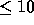

| Points in Figures: Rectangles and Circles |
Given a list of figures (rectangles and circles) and a list of points in the x-y plane, determine for each point which figures (if any) contain the point.
There will be n(  ) figures descriptions, one per line. The first character will designate the type of figure (``r'', ``c'' for rectangle or circle, respectively). This character will be followed by values which describe that figure.
The end of the list will be signalled by a line containing an asterisk in column one.
The remaining lines will contain the x-y coordinates, one per line, of the points to be tested. The end of this list will be indicated by a point with coordinates 9999.9 9999.9; these values should not be included in the output.
Points coinciding with a figure border are not considered inside.
For each point to be tested, write a message of the form:
Point i is contained in figure jfor each figure that contains that point. If the point is not contained in any figure, write a message of the form:
Point i is not contained in any figurePoints and figures should be numbered in the order in which they appear in the input.
r 8.5 17.0 25.5 -8.5 c 20.2 7.3 5.8 r 0.0 10.3 5.5 0.0 c -5.0 -5.0 3.7 r 2.5 12.5 12.5 2.5 c 5.0 15.0 7.2 * 2.0 2.0 4.7 5.3 6.9 11.2 20.0 20.0 17.6 3.2 -5.2 -7.8 9999.9 9999.9
Point 1 is contained in figure 3 Point 2 is contained in figure 3 Point 2 is contained in figure 5 Point 3 is contained in figure 5 Point 3 is contained in figure 6 Point 4 is not contained in any figure Point 5 is contained in figure 1 Point 5 is contained in figure 2 Point 6 is contained in figure 4
Diagrama of sample input figures and data points